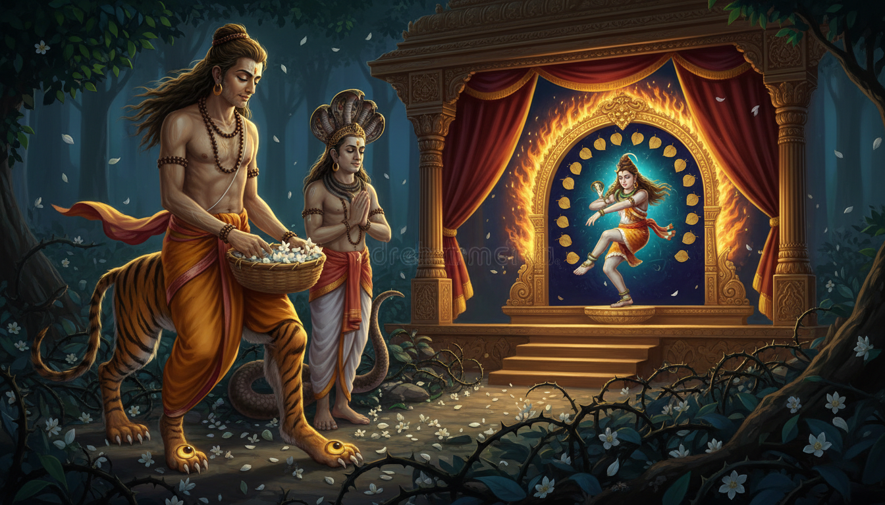

एक दुख ऐसा है जिसका नाम किसी दोष-सूची में नहीं मिलता। कुछ भी भयानक रूप से गलत नहीं है। धन आ जाता है। विवाह टिका हुआ है। शरीर कुछ-कुछ काम करता है। और फिर भी वह व्यक्ति लगभग इन्हीं शब्दों में कहता है: "मैं प्रार्थना करता हूँ, और कोई पलटकर नहीं देखता।" उसे लगता है कि उसे उसके ही जीवन से बाहर रख दिया गया है — जैसे उसके और उस देवता के बीच एक परदा लटका है, और वह परदा कभी हिलता ही नहीं।

तमिल परंपरा में ठीक इसी स्थिति के लिए एक ऋषि हैं। नाम है व्याघ्रपाद — "बाघ-चरण"। और वे उन सब के अधिष्ठाता हैं जिनकी भक्ति का उत्तर मौन से दिया गया। वे देवता नहीं हैं। वे एक मनुष्य हैं जो फूल चुनते रहे।
—
भाग एक: स्रोत वास्तव में क्या कहते हैं
1. वह काम जो कोई नहीं चाहता था
तमिलनाडु के चिदंबरम में, तिल्लई के वन में, व्याघ्रपाद को इतना छोटा काम सौंपा गया कि वह लगभग लज्जाजनक है: उन्हें नटराज रूप में शिव के लिए ताज़े फूल चुनने थे — और फूल अछूते होने चाहिए। केवल कुचले हुए नहीं। अछूते: उन पर कोई मधुमक्खी न बैठी हो, कोई कीट पंखुड़ी पर न रेंगा हो, उन्हें उनसे पहले किसी हाथ ने न छुआ हो।
यह सुनने में जितना आसान लगता है, उतना है नहीं। फूल सूर्योदय से पहले खिलता है। सूरज निकलते-निकलते मधुमक्खियाँ उसे पा चुकी होती हैं। जिस फूल को अभी किसी जीव ने न छुआ हो, उसे लाने के लिए अंधेरे में उपवन में होना पड़ता है, तेज़ चलना पड़ता है, और देखना पड़ता है — सचमुच देखना पड़ता है — कि हाथ किस चीज़ पर पड़ने वाला है।
पहले-पहल वे यह काम बुरी तरह करते रहे, जैसे हम सब छोटे काम बुरी तरह करते हैं। स्रोत कहते हैं कि वन में चलते हुए वे काँटों से घायल और तेज़ पत्थरों से कट गए। उनके पैर छिल गए। और यहीं वह ब्यौरा आता है जिसके कारण यह कथा रखने योग्य है: उन्होंने काम से मुक्ति नहीं माँगी। उन्होंने काम कर सकने योग्य बनाए जाने की माँग की।
2. वह वरदान जो पुरस्कार नहीं, औज़ार है
शिव ने उन्हें बाघ के पैर दिए। बाघ का पंजा मौन है, निश्चित है, काँटे और कंकड़ से नहीं कटता; वह फूल देने वाले वृक्ष की खुरदरी छाल पर बिना फिसले चढ़ जाता है और जिन कलियों के लिए वे आए थे, उन्हें हिलाता भी नहीं।
तमिल परंपरा वरदान का दूसरा आधा भाग जोड़ती है, और साधना के लिए महत्वपूर्ण वही आधा है: तलवों में आँखें। यदि काम है वह देखना जो अभी देखा नहीं गया, तो देखना वहीं होना चाहिए जहाँ पैर पड़ता है — संपर्क-बिंदु पर, भूमि पर, अंधेरे में, इससे पहले कि मन तय कर ले कि वहाँ क्या है।
इसे दोबारा पढ़िए, क्योंकि यह परीकथा का बिंब नहीं है। यह इस बात का कथन है कि दृष्टि का घर कहाँ होना चाहिए। सिर में नहीं, दूर से निर्णय लेती हुई। तलुवे में, संपर्क के स्थान पर। जिस ऋषि को तलुवे की आँखें मिलती हैं, वह वह ऋषि है जिसे यह जानने के लिए ऊपर देखने की ज़रूरत नहीं रहती कि उसकी ओर देखा जा रहा है या नहीं।
3. दूसरा ऋषि, और वह नृत्य जिसे दोहराया नहीं जा सकता था
चिदंबरम की हर प्रतिमा में उनके साथ एक दूसरा व्यक्ति खड़ा है: पतंजलि, जिन्हें दक्षिण में शेष-देह कहा जाता है — विष्णु का वह सर्प जो ऋषि बनकर उतरा। दोनों सदा साथ दिखाए जाते हैं, बाघ-चरण और सर्प-कुंडल, दोनों हाथ जोड़े, दोनों उसी उठे हुए चरण की ओर देखते हुए।
तिल्लई का स्थलपुराण बताता है कि वे साथ क्यों हैं। किसी पूर्व युग में शिव ने ऋषियों के समाज में आनंद-तांडव किया था, और उस नृत्य ने उनकी तपस्या की खोखलापन उजागर कर दिया था: ऋषियों ने अपने लिए शक्ति संचित की थी और उससे वे मुक्त नहीं हुए थे। व्याघ्रपाद और पतंजलि ने यह सुना और वे उसे फिर से देखना चाहते थे। कुछ पाने के लिए नहीं। साक्षी होने के लिए।
तो उन्होंने वही किया जो भगवान को नाचते देखने के इच्छुक मनुष्यों के पास उपलब्ध था। उन्होंने तिल्लई के वन में शिवलिंग स्थापित किया, बैठ गए, और उठे नहीं। उन्होंने प्रार्थना की, ध्यान किया, और प्रतीक्षा की। स्रोत सीधे-सीधे कहता है: उनकी तपस्या से शिव प्रभावित हुए, और वे प्रकट हुए तथा नृत्य फिर किया — दीवार के सामने, जिसे परंपरा चित्-सभा, चेतना का सभागार, कहती है।
यही चिदंबरम मंदिर की स्थापना-कथा है। शिव के इस रूप के लिए दुनिया का सबसे बड़ा जीवित मंदिर इसलिए खड़ा है क्योंकि दो मनुष्यों ने एक उपवन से हटने से इनकार कर दिया।
4. परदे के पीछे क्या है
चिदंबरम का गर्भगृह अन्य शिव मंदिरों जैसा नहीं बना, और यही अंतर पूरी साधना का सैद्धांतिक हृदय है।
चित्-सभा में नटराज की प्रतिमा सोने की छत के नीचे खड़ी है — पोन अंबलम, जिसे नवीं शताब्दी में परांतक चोल प्रथम ने स्वर्ण-मंडित कराया। और नृत्य-प्रतिमा के ठीक बगल में एक परदे वाला गर्त है, लगभग साढ़े तीन मीटर लंबा और डेढ़ मीटर चौड़ा, जिस पर दो परदे लटके हैं — एक लाल, एक काला। उनके पीछे बावन स्वर्ण बिल्व-पत्र हैं, और उसके सिवा कुछ नहीं।
पूजा का क्रम निश्चित है और वह स्पष्ट क्रम नहीं है। आरती पहले नटराज की प्रतिमा को दी जाती है — और उसके बाद ही परदे हटाए जाते हैं और दीप रिक्त स्थान में रखे उन पत्रों के सामने उठाया जाता है। उस परदे वाली रिक्तता का नाम है चिदंबर-रहस्य — चिदंबरम का रहस्य। वही आकाश-लिंग है: पाँच तत्व-लिंगों में वह जिसे दिखाया नहीं जा सकता, क्योंकि आकाश का कोई आकार ही नहीं।
बाकी हर मंदिर आपको देखने के लिए कुछ देता है। चिदंबरम आपको वह स्थान देता है जहाँ देवता दिखाई नहीं देते, और उसे ही पाँचों में सबसे ऊँचा कहता है।
इसी कारण यह मंदिर सभी शिव-मंदिरों में सूक्ष्मतम कहा जाता है, और इसी कारण वह उन लोगों की तीर्थयात्रा है जिनकी समस्या ठीक संकेत का अभाव है — अनुत्तरित प्रार्थना, बंद द्वार, विधि के बाद का मौन।
5. वे अन्य स्थान जो उन्हें स्मरण रखते हैं
व्याघ्रपाद एक मंदिर तक सीमित नहीं हैं। केरल के कोट्टायम ज़िले में वैकम के शिव-मंदिर के संस्थापक वही माने जाते हैं — और उस मंदिर की अपनी परंपरा भी एक दूसरी तरह की प्रतीक्षा पर घूमती है। और तमिलनाडु के तिरुसिरुपुलियूर विष्णु-मंदिर में वे और पतंजलि श्रीरंगम के रंगनाथ का दर्शन पाने वाले कहे गए हैं — वही जोड़ी, वही जुड़े हाथ, वही फल: उन्होंने देख लिया।
प्रतिमा-विधान हर जगह एक-सा है: मनुष्य का शरीर, बाघ की टाँगें, प्राय: बाघ की पूँछ, पतंजलि के साथ, दोनों नृत्य की ओर मुख किए हुए।
6. वह ग्रंथ जो उन्होंने छोड़ा माना जाता है
यहाँ कथा भक्ति से ज्योतिष की ओर मुड़ती है, और यही वह भाग है जो लगभग किसी को नहीं पता।
केरल की परंपरा व्याघ्रपाद को ग्रहों का एक ग्रंथ समर्पित करती है — जिसे अंकणशास्त्र, ग्रहसमय या नवग्रहसमय कहा जाता है। वह चार अध्यायों में 389 श्लोकों का है। उसकी रचना-विधि ही रोचक है: प्रत्येक लग्न-राशि नौ अंकणों में विभाजित है — नवांश का सिद्धांत — और प्रत्येक अंकण पर एक ग्रह का अधिपत्य है, जिसकी अपनी विशिष्टताएँ हैं।
प्रति लग्न नौ विभाजन, और हर विभाजन का अपना ग्रह। यह सामान्य फलित नहीं है। यह कुंडली के एक ही भाव के भीतर यह खोज निकालने की विधि है कि वास्तव में नौ ग्रहों में से कौन द्वार पकड़े हुए है। यह कथा का तकनीकी प्रतिरूप है: जिस ऋषि के तलुवों में आँखें हैं, वही वह ऋषि है जो पैर के नीचे की ज़मीन देख सकता है — वह भूमि जिस पर मनुष्य वास्तव में खड़ा है, वह आकाश नहीं जिसकी ओर वह देख रहा है।
तो हमारे पास एक ऐसा ऋषि है जिसकी कथा वह देखने की है जो अभी तक नहीं देखा गया, और जिसका बचा हुआ ग्रंथ भाव के एक विभाजन में छिपे ग्रह को खोजने का है। दोनों आधे मिलते हैं। एक भक्ति की कथा है; दूसरा उपकरण।
—
भाग दो: चिदंबरम-कुंडली — परदे को पढ़ना
कुछ भी विहित करने से पहले कुंडली को उसी तरह पढ़िए जैसे मंदिर बना है: एक प्रतिमा है, और एक परदे वाला स्थान है, और परंपरा कहती है कि स्थान ऊपर है।
प्रतिमा नवम भाव है। धर्म, देवता, जिस रूप की आप पूजा करते हैं, वह आशीर्वाद जिसे आप इंगित कर सकते हैं। नवम बलवान हो तो साधक को संकेत मिलते हैं — स्वप्न, संयोग, ठीक समय पर चमकता दीपक। यह दृश्य नटराज है।
परदा द्वादश भाव है। जो छिपा है, जो बह जाता है, जो दिखाया नहीं जाता। चिदंबरम मोक्ष-स्थल है, और कुंडली में मोक्ष द्वादश है। जिसका द्वादश भारी है, उसे दृश्य प्रमाण नहीं मिलते। उसे वही रिक्त गर्त मिलता है।
बावन पत्र नवांश में पंचम और नवम हैं। बावन परंपरा का अपना रहस्य-संख्या है; व्यवहार में जो संख्या मायने रखती है वह नौ है — नवग्रहसमय के नौ अंकण। पत्र स्वर्ण के हैं क्योंकि स्वर्ण ही वह धातु है जो प्रतीक्षा करते हुए ज़ंग नहीं खाती।
लाल और काला परदा राहु और केतु हैं। लाल उतरती भूख के लिए, काला कटे हुए मुंड के लिए। जिस भी कुंडली में राहु-केतु की धुरी चतुर्थ-दशम या पंचम-एकादश पर हो, वह चिदंबरम-कुंडली है: वह व्यक्ति ऐसे परदे के पास रहता है जो नियत समय पर खुलता और नियत समय पर बंद होता है, और उसका पूरा जीवन उस क्षण को पकड़ने में बीतता है जब परदा खुला हो।
और बाघ मंगल है। बाघ-चरण का वरदान इस कथा का अकेला वरदान है जो काम को समाप्त करने के लिए नहीं, उसे संभव बनाने के लिए दिया गया। यही शुद्ध मंगल-उपाय की पहचान है: परिश्रम का हटना नहीं, अनावश्यक चोट का हटना।
—
भाग तीन: कार्य-विधि
नीचे सब कुछ उन्हीं दो चीज़ों से बना है जो हमारे पास वास्तव में हैं — चिदंबरम की पूजा-व्यवस्था और नवग्रहसमय की नौ-अंकण रचना। जहाँ कोई चरण पुनर्निर्माण है, वहाँ यह स्पष्ट लिखा गया है। यहाँ किसी पुरोहित, तमिलनाडु की उड़ान, या उस धन की ज़रूरत नहीं जो आपके पास नहीं है।
1. वह फूल जिसे किसी ने न छुआ हो — इक्कीस सुबहें
कार्य-विधि: इक्कीस लगातार सुबहों तक, सूर्योदय से पहले, अपने हाथ से एक फूल तोड़िए और शिव या नटराज की प्रतिमा पर अर्पित कीजिए — फोटो पर्याप्त है, छोटी पीतल की नटराज-मूर्ति और अच्छी है। तीन नियम हैं, और नियम ही पूरी विधि हैं:
- फूल आपने तोड़ा हो, खरीदा हुआ न हो। सड़क किनारे का फूल चलेगा; बगीचे का फूल चलेगा; मंदिर का वह फूल नहीं जो आपने नहीं तोड़ा।
- वह अछूता हो — कीट देखिए, सूँघिए नहीं, किसी और को छूने न दीजिए।
- आपको तोड़ते हुए किसी ने न देखा हो, और आप किसी को न बताएँ कि कौन-सा फूल था।
इक्कीस सुबहें ही मूल बात हैं। उनमें से अधिकांश में कुछ नहीं होगा। विधि संकेत पैदा करने के लिए नहीं बनी; वह उसी एक क्षमता को फिर से बनाने के लिए बनी है जिसकी कथा है — संपर्क-बिंदु पर ध्यान, इतनी देर तक टिका हुआ कि मन यह पूछना बंद कर दे कि काम हो रहा है या नहीं।
2. तलुवे की दृष्टि — पद-नेत्र ध्यान
कार्य-विधि: प्रतिमा की ओर मुख करके बैठिए। आँखें नीची कीजिए जब तक दृष्टि देवता के चरणों पर न पड़े — और यदि प्रतिमा न हो तो अपने नंगे पैरों पर, फ़र्श पर। दृष्टि कोमल, आधी बंद, तलुवों पर। आँखें चेहरे तक मत उठाइए। ग्यारह मिनट, दिन में एक बार, चालीस दिन।
यही तलुवे-नेत्र वरदान की व्यावहारिक सामग्री है। साधारण भक्त ऊपर देखकर माँगता है कि उसे देखा जाए। यह अभ्यास दिशा उलट देता है: वह नीचे देखता है, भूमि पर, संपर्क के स्थान पर, और वहीं रुकता है। जो लोग किसी रूप पर ध्यान नहीं कर पाते — क्योंकि कोई रूप दिखता ही नहीं — वे लगभग हमेशा यह अभ्यास कर सकते हैं, क्योंकि इसमें देखने को कुछ नहीं है।
यह विशेष रूप से पंचम, नवम या द्वादश में केतु के लिए, और उन कुंडलियों के लिए प्रयुक्त होता है जिनमें जातक कहता है कि प्रार्थना "पहुँचती ही नहीं"।
3. रहस्य — रिक्त स्थान की पूजा
कार्य-विधि: एक कमरे का एक कोना चुनिए और उसे स्थायी रूप से रिक्त रखिए। तस्वीर वाला मंदिर नहीं। स्वच्छ, खाली कोना, और उसमें एक दीया। उसके सामने दो कपड़े लटकाइए — एक लाल, एक काला — और वहीं रहने दीजिए। वहाँ हर प्रदोष पर दीया जलाइए (प्रत्येक पक्ष की त्रयोदशी, शुक्ल और कृष्ण दोनों — महीने में दो बार)।
क्रम चिदंबरम का क्रम है और उसे उलटना नहीं है: पहले घर में जहाँ भी आप कोई प्रतिमा रखते हैं, उसे दीप अर्पित कीजिए; फिर कपड़े हटाकर रिक्त कोने को दीप अर्पित कीजिए। गिनती दूसरी अर्पण की है।
यह विधि उस जातक के लिए है जिसकी कुंडली में उत्तर भरे हैं और पुष्टि खाली है। यह इस बात की औपचारिक स्वीकृति है कि घर में सबसे ऊँची वस्तु वही है जो वहाँ नहीं है — और परंपरा में वही स्वीकृति स्वयं दर्शन है।
4. बाघ-चरण — उस कुंडली के लिए जहाँ परिश्रम घायल करता है
कार्य-विधि: आठ लगातार मंगलवारों को (मंगल का दिन), शिव-मंदिर में एक सौ आठ कदम नंगे पैर चलिए, या यदि मंदिर निकट न हो तो साफ़ भूमि पर पूर्व की ओर मुख करके, भोर में। धीरे चलिए। निर्देश कष्ट सहने का नहीं, पैर रखने का है। भूमि तेज़ हो तो जहाँ तेज़ न हो वहाँ चलिए — बाघ का पैर इसलिए दिया गया कि काम बिना चोट के चलता रहे, इसलिए नहीं कि चोट अर्पित की जाए।
फिर इन आठ सप्ताहों में से हर सप्ताह एक अनावश्यक कठिनाई अपने जीवन से हटाइए: अपराधबोध से लिया गया दायित्व, वह अतिरिक्त पाली जो किसी चीज़ के लिए नहीं, और वह संबंध जो केवल सहन से टिका है। मंगल का उपाय तब विफल होता है जब उसे और परिश्रम में बदल दिया जाए। कथा में वरदान पैर में परिवर्तन था, भार में वृद्धि नहीं।
5. नौ अंकण — वह ग्रह जो द्वार पकड़े है
कार्य-विधि: यह नवग्रहसमय की रचना का अनुसरण करता है — प्रति लग्न नौ विभाजन, हर एक पर एक ग्रह — और यह उसी रचना से बना अभ्यास-पुनर्निर्माण है, ग्रंथ का उद्धरण नहीं।
अपना लग्न लीजिए और वह भाव जिसमें आपकी समस्या वास्तव में रहती है (विवाह के लिए सप्तम, कार्य के लिए दशम, घर के लिए चतुर्थ, संतान और मंत्र के लिए पंचम)। उस भाव में नौ नवांश-विभाजन हैं। नौ ग्रहों में से एक उस विभाजन का स्वामी है जिसमें आपका कष्ट बैठा है। 389 श्लोकों के बिना आप इसकी गणना नहीं कर सकते; पर आप वह विधि कर सकते हैं जो नौ को ढक ले और सही ग्रह स्वयं पकड़ ले:
नौ लगातार दिनों तक, रविवार से आरंभ करके अगले सोमवार तक, हर दिन एक छोटा दीप अर्पित कीजिए, प्रचलित क्रम में — सूर्य, चंद्र, मंगल, बुध, गुरु, शुक्र, शनि, राहु, केतु — एक दिन एक दीप, उस दिन के देवता को, और एक वाक्य ऊँची आवाज़ में उस विशिष्ट विषय का नाम लेकर। सामान्य प्रार्थना नहीं। वाक्य उस चीज़ का नाम ले: यह विवाह, यह फ़ाइल, यह संतान, यह घर।
नवें दिन फिर मत माँगिए। नवग्रहसमय खोजने का यंत्र है, मोल-भाव का नहीं; नौ विभाजनों का प्रयोजन द्वार खोजना है, और द्वार मिल जाने पर परंपरा का निर्देश है — खटखटाना बंद करो और उसमें खड़े हो जाओ।
6. क्या नहीं करना है
तीन निषेध, सब जीवित मंदिर-व्यवहार से, और सब नियमित रूप से टूटते हैं:
- नृत्य-नटराज को घर का देवता मत बनाइए। आनंद-तांडव सार्वजनिक और विराट रूप है, सभा में पूज्य, शयनकक्ष में नहीं। घर के लिए परंपरा लिंग या बैठे हुए सदाशिव को रखती है। जो घर नृत्य-रूप स्थापित करके फिर बेचैनी, टूटी नींद, या "घर जमता ही नहीं" की शिकायत करते हैं, वे प्राय: यही बात बता रहे होते हैं।
- परदे का क्रम मत उलटिए। पहले प्रतिमा, बाद में रिक्त स्थान। उलटा करना तिल्लई की कथा के उन ऋषियों की भूल है — शक्ति पहले, और स्वयं को खाली करना बाद में।
- प्रतीक्षा को माँग मत बना दीजिए। व्याघ्रपाद उपवन में इसलिए बैठे थे कि वे देखना चाहते थे, इसलिए नहीं कि उन्हें कोई तिथि वचन में मिली थी।
7. गोचर और नक्षत्र-संरेखण
- आर्द्रा स्वयं शिव का नक्षत्र है, जिसका स्वामी राहु है — आँधी और आँसुओं का तारा। आर्द्रा से गुज़रने वाला कोई भी ग्रह, या आर्द्रा में बैठा कोई कष्ट, इस विधि के लिए खिड़की है।
- प्रदोष महीने में दो बार मिलने वाली खिड़की है; रहस्य का दीप वहीं का है, और कहीं का नहीं।
- महाशिवरात्रि चिदंबरम में नृत्यांजलि की रात है — नर्तक को नृत्य अर्पित। यदि फूल-व्रत (विधि 1) करें, तो उसे महाशिवरात्रि या आर्द्रा से आरंभ करने से सबसे मज़बूत ढाँचा मिलता है।
- चंद्रमा से चतुर्थ में शनि का गोचर वही "घर में खाली सभागार" गोचर है: कमरा मौजूद है, उपस्थिति नहीं। विधि 3 इसी के लिए लिखी गई है।
- नवम में केतु का गोचर ठीक वही शिकायत पैदा करता है जिससे यह लेख आरंभ हुआ — भक्ति, पर उत्तर नहीं। विधि 1 और 2 इसकी जोड़ी हैं।
—
भाग चार: विधि लिखने से पहले कुंडली पढ़ना
विधि से आरंभ मत कीजिए। एक प्रश्न से आरंभ कीजिए: इस व्यक्ति की समस्या यह है कि द्वार बंद है, या यह कि उसे दिखता नहीं कि द्वार खुला है?
- बंद द्वार: नवमेश पर शनि या केतु की दृष्टि, या नवमेश षष्ठ/अष्टम/द्वादश में। विधि 5 और 3 लिखिए। इन कुंडलियों को व्यवस्था खोजनी है और धैर्य को संस्थागत बनाना है।
- दिखता नहीं: प्रथम या पंचम में राहु, चंद्र-राहु, या बलवान द्वादश के साथ दुर्बल नवम। विधि 1 और 2 लिखिए। इन जातकों में कृपा की कमी नहीं; उस इंद्रिय की कमी है जो कृपा दर्ज करती है।
- परिश्रम जो घायल करता है: मंगल-शनि, चतुर्थ में मंगल, या लग्न पर मंगल की दृष्टि बिना शुभ-राहत। विधि 4 लिखिए, और "एक कठिनाई हटाओ" वाले अंश पर कड़ाई कीजिए — यही वह कुंडली है जो उपाय को और काम में बदल देगी यदि आपने ढील दी।
- घर जो जमता नहीं: घर में स्थापित नटराज, चतुर्थ भाव में राहु-केतु, या चतुर्थेश द्वादश में। नृत्य-रूप हटाइए, एक कोना खाली कीजिए, विधि 3 कीजिए।
—
समापन: एक वाक्य जो रखने योग्य है
व्याघ्रपाद को उनकी भक्ति का पुरस्कार नहीं मिला। उन्हें उसके लिए फिर से औज़ार बनाया गया। उन्होंने वह छोटा, दोहराया जाने वाला, बिना चमक वाला काम कर सकने की माँग की — और उत्तर दर्शन नहीं था, बेहतर पैर और नीची आँख थी।
यदि आपकी प्रार्थनाएँ इतनी देर तक अनुत्तरित रही हैं कि आपको संदेह होने लगा है कि दोष आप में है, तो चिदंबरम की परंपरा एक सुधार देती है। दोष प्राय: भक्ति में नहीं होता। वह संपर्क की इंद्रिय में होता है — और उस इंद्रिय को बदला जा सकता है। और अधिक परिश्रम से नहीं। आँख को वहाँ रखकर जहाँ पैर वास्तव में पड़ता है।
उस मंदिर का देवता परदे के पीछे नहीं है। परदा ही देवता है, और वह महीने में दो बार हटता है — उसके सामने खड़े हर किसी के लिए।
स्रोत: विकिपीडिया की व्याघ्रपाद और तिल्लई नटराज मंदिर प्रविष्टियाँ तथा वहाँ उद्धृत तमिल स्थलपुराण सामग्री; डलापिकोला, Dictionary of Hindu Lore and Legend; स्मिथ, The Dance of Siva; के. वी. शर्मा, A History of the Kerala School of Hindu Astronomy (अंकणशास्त्र के श्रेय-निर्देश हेतु)।
Sources
No source URLs were returned by NotebookLM for this run.